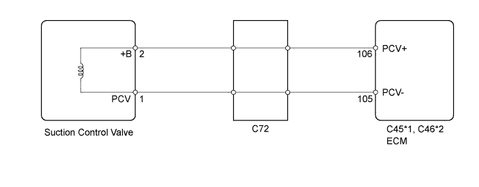
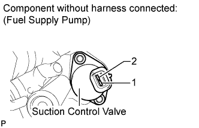
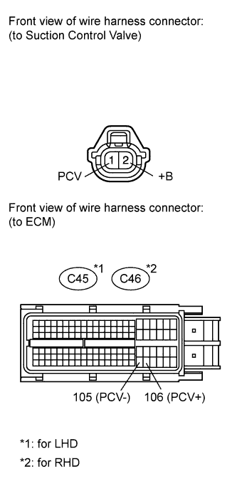

DTC P0627 Fuel Pump Control Circuit / Open |
| DTC Detection Drive Pattern | DTC Detection Condition | Trouble Area |
| Idling for 1 second | Even though the CPU (command area inside ECU) is outputting the suction control valve operation duty, the output monitor signal is absent for 0.5 seconds (1 trip detection logic). |
|
| DTC No. | Data List |
| P0627 | Fuel Press |

| 1.INSPECT FUEL SUPPLY PUMP (SUCTION CONTROL VALVE) |
 |
Disconnect the suction control valve connector.
Measure the resistance according to the value(s) in the table below.
| Tester Connection | Condition | Specified Condition |
| 1 - 2 | 20°C (68°F) | 1.9 to 2.3 Ω |
|
| ||||
| OK | |
| 2.CHECK HARNESS AND CONNECTOR (SUCTION CONTROL VALVE - ECM) |
 |
Disconnect the suction control valve connector.
Disconnect the ECM connector.
Measure the resistance according to the value(s) in the table below.
| Tester Connection | Condition | Specified Condition |
| Suction control valve connector-1 (PCV) - C45-105 (PCV-) | Always | Below 1 Ω |
| Suction control valve connector-2 (+B) - C45-106 (PCV+) | Always | Below 1 Ω |
| Tester Connection | Condition | Specified Condition |
| Suction control valve connector-1 (PCV) - C46-105 (PCV-) | Always | Below 1 Ω |
| Suction control valve connector-2 (+B) - C46-106 (PCV+) | Always | Below 1 Ω |
| Tester Connection | Condition | Specified Condition |
| Suction control valve connector-1 (PCV) or C45-105 (PCV-) - Body ground | Always | 10 kΩ or higher |
| Suction control valve connector-2 (+B) or C45-106 (PCV+) - Body ground | Always | 10 kΩ or higher |
| Tester Connection | Condition | Specified Condition |
| Suction control valve connector-1 (PCV) or C46-105 (PCV-) - Body ground | Always | 10 kΩ or higher |
| Suction control valve connector-2 (+B) or C46-106 (PCV+) - Body ground | Always | 10 kΩ or higher |
|
| ||||
| OK | |
| 3.CHECK WHETHER DTC OUTPUT RECURS |
Connect the intelligent tester to the DLC3
Turn the engine switch on (IG) and turn the tester on.
Clear the DTCs (Click here).
Start the engine and idle it for 1 second.
Enter the following menus: Powertrain / Engine / DTC.
Read the DTCs.
| Result | Proceed to |
| P0627 is output | A |
| No DTC is output | B |
|
| ||||
|
| ||||
| 4.REPLACE FUEL SUPPLY PUMP |
Replace the fuel supply pump (Click here).
|
| ||||
| 5.REPAIR OR REPLACE HARNESS OR CONNECTOR |
|
| ||||
| 6.REPLACE ECM |
Replace the ECM (Click here).
|
| ||||
| 7.CONFIRM WHETHER MALFUNCTION HAS BEEN SUCCESSFULLY REPAIRED |
Connect the intelligent tester to the DLC3.
Clear the DTCs (Click here).
Turn the engine switch off.
Start the engine and idle it for 1 second.
Confirm that the DTC is not output again.
Enter the following menus: Powertrain / Engine / Utility / All Readiness.
Input DTC P0627.
Check that STATUS is NORMAL. If STATUS is INCOMPLETE or UNKNOWN, increase idling time.
| NEXT | ||
| ||